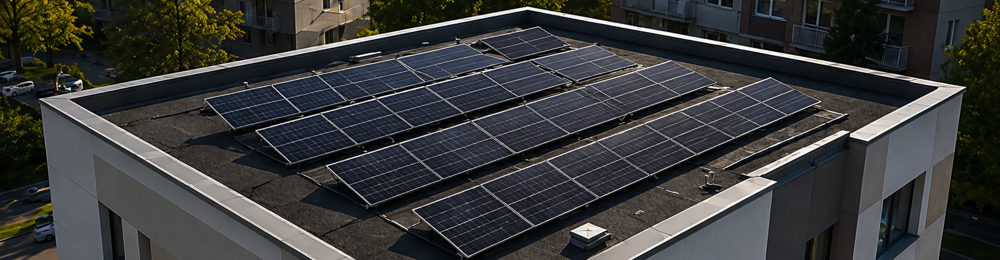

Přehled dotačních programů (NZÚ, OPŽP), výše podpory, podmínky pro SVJ a legislativní hranice.
Stránka shrnuje aktuální podporu, legislativní podmínky a nejčastější otázky SVJ k FVE pro bytové domy.
Hlavní forma podpory administrovaná Státním fondem životního prostředí (SFŽP). Pokrývá náklady na fotovoltaické panely, střídač, bateriové úložiště i projektovou dokumentaci formou bezúročného úvěru, ne dotace.

Sdílení elektřiny v SVJ
Od roku 2024 mohou SVJ na základě novely energetického zákona (Lex OZE II) legálně sdílet elektřinu z FVE mezi bytovými jednotkami v rámci jedné budovy, aniž by k tomu bylo nutné zakládat samostatnou právnickou osobu.
Stavební povolení a hranice 100 kW
FVE do 100 kW na stávající budově nevyžaduje ani stavební povolení, ani ohlášení záměru. Nad 100 kW je nutné stavební povolení — do 250 kW ve zjednodušeném řízení, nad touto hranicí v plném rozsahu. Většina bytových domů s 12–30 byty se s běžně navrhovaným výkonem FVE do tohoto limitu pohodlně vejde.
Připojení k distribuční soustavě
SVJ musí uzavřít smlouvu o připojení s místním distributorem (ČEZ Distribuce, EG.D nebo PREdistribuce). Distributor má ze zákona lhůtu 30 dní na vyjádření k žádosti u zařízení připojovaného do nízkého napětí, u vyšší napěťové hladiny (větší instalace) 60 dní.
Certifikace zařízení
Střídače musí splňovat normu ČSN EN 50549 pro připojení k distribuční soustavě. FV panely podléhají normám IEC 61215 a IEC 61730.
Kvalita provedení ovlivňuje bezpečnost systému, jeho životnost i jednoduchost servisního zásahu. Profesionální rozvaděč a kabeláž se od základního provedení liší zejména v přehlednosti, použitých komponentech a odolnosti vůči vlhkosti.
Profesionální provedení
Základní provedení
O podporu může žádat SVJ nebo bytové družstvo jako právnická osoba — nikoli jednotliví vlastníci bytů. Žádost podává statutární zástupce SVJ (předseda výboru) prostřednictvím online portálu SFŽP. K žádosti je potřeba zpracovaný renovační pas (zjednodušený průkaz energetické náročnosti budovy od registrovaného energetického poradce) a projektová dokumentace od autorizovaného projektanta.
Ano. Bezúročný úvěr pokrývá částku danou vzorcem podle výkonu FVE a kapacity baterie (viz sekce Financování výše) — pokud investice tento rámec přesáhne, zbývající částku SVJ obvykle řeší z vlastních zdrojů nebo běžným bankovním úvěrem. Konkrétní seznam bank a stavebních spořitelen zapojených do programu NZÚ zveřejní Státní fond životního prostředí nejpozději koncem srpna 2026.
Pro FVE do výkonu 100 kW na stávající budově není potřeba ani stavební povolení, ani ohlášení záměru. Nad 100 kW je nutné stavební povolení — do 250 kW ve zjednodušeném řízení, nad touto hranicí v plném rozsahu. Většina bytových domů s 12–30 byty se s běžně navrhovaným výkonem FVE do tohoto limitu pohodlně vejde.
Ekonomická návratnost FVE pro bytový dům
Kritéria pro bytový dům: orientace střechy, spotřeba, časový horizont. Kdy investice smysl nedává.
Náklady na FVE pro bytový dům
Interaktivní kalkulačka nákladů, položkový rozpis a orientační ceny pro různé výkony systému.
Hodnocení nabídky od dodavatele FVE
Co by měla nabídka obsahovat, jak ověřit cenu, na co si dát pozor a jak srovnat 3 nabídky vedle sebe.
Průvodce FVE — přehled všech témat
Zpět na přehled témat fotovoltaiky pro bytové domy.